ADITI
NETIAN
Anatomy of a Kolam
raises a conversation about bridging human and machine, tradition and technology, probing
whether the essence of cultural forms can truly be translated into the language of automation.
speculative / critical design,
physical computing,
interactive experiences
This project was undertaken as part of the inaugural 2024-25 cycle of the
Design Research Fellowship. Organised by SAM Design Collection, an initiative of Singapore Art Museum, this new
platform supports alternative pathways for and forms of design(-adjacent) research.
VISIT THE DESIGN COLLECTION→
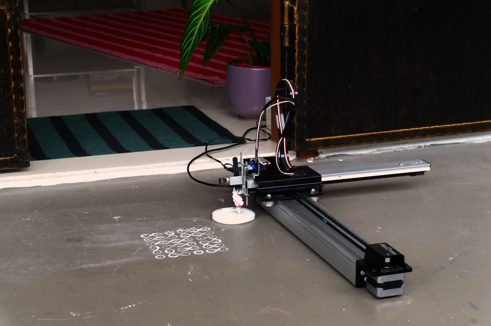
BACKGROUND
A kolam is a traditional form of decorative geometric line art drawn by women, primarily using rice flour, on
the ground at the entrance of homes and temples in South India and other parts of Asia. It is a daily ritual
considered an auspicious welcome sign to invite prosperity (Goddess Lakshmi) and positive energy, while also
providing food for small creatures like ants and birds.
Traditionally, kolams are created using dry rice flour or a paste made out of rice flour!
The creation of a Kolam, a traditional Indian art form, involves an intentionality in every step of the process:
from choosing the geometric patterns and colours to its motifs and materials.
Additionally, the physical act of making it, through a tactile and sensory experience, is deeply ingrained in
its tradition and cultural significance.
CONCEPT
This research aims to explore how the creation of kolams, a traditional South Indian art form, can be reimagined
through generative design and human-machine interaction, by creating a new physical-digital meaning-making
experience. It investigates how human creativity, intentionality, and physicality in kolam-making can be adapted
using digital tools, while maintaining the cultural significance of the process of its creation.
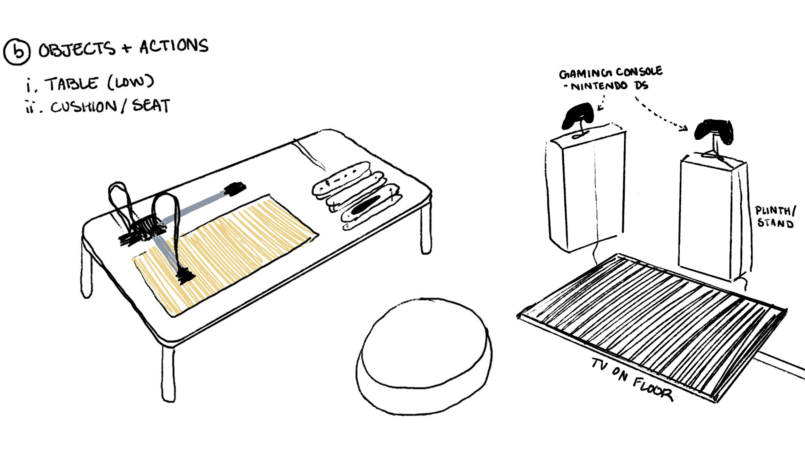
RESEARCH: INTERVIEWS
I conducted interviews with individuals who have prior experience in rangoli or kolam making, as well as those
who have used creative technologies in this domain. These interviews delve into the nuances of cultural
knowledge, personal creativity, and embodied practices that define kolam-making.
Featured: Aarati Akkapedi, Vijaya Mohan and Dr. Vijaya Nagarajan
SEE
INTERVIEWS→
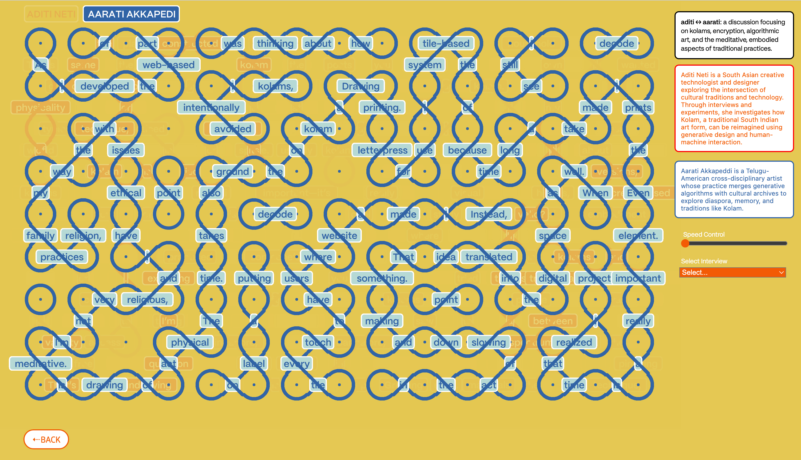
RESEARCH: VISUAL STUDY
This interactive collage, or limited archive, was my way into understanding the embodied knowledge behind kolam
making.
VISUAL STUDY→
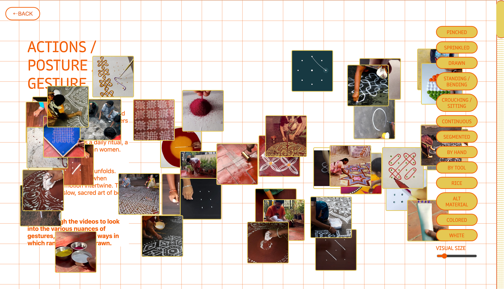
Drawing Down Desires
This theoretic interactive explores the visual and sonic resonances between kolam and cymatics, the study of how
sound vibrations shape matter into patterns. The device
pictured is a custom-built sonic interface that captures spoken desires and translates it into generative
Chladni-inspired visuals, simulating the ways kolams and sound both give form to rhythm.
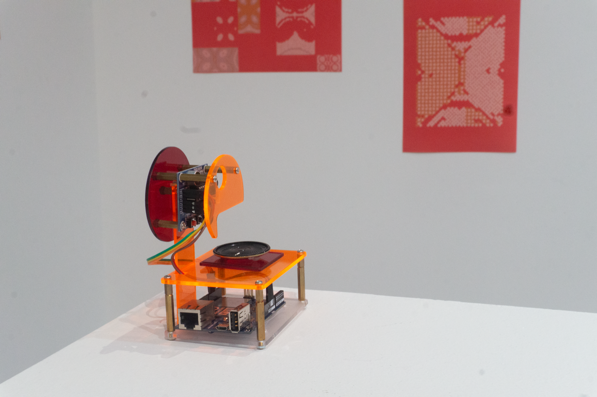
From Hand To Machine
Kolam-making traditionally emphasizes bodily gestures—improvisational hand movements guiding the flow of powder
or chalk. This experiment captures those gestures in real time and translates them into a mechanical drawing
process via an AxiDraw pen plotter. (Investigating whether a digital intermediary can preserve the tactility,
imperfection, and ritual aspect of kolam gestures, and how physicality interacts with computational systems to
create hybrid analog-digital artworks)
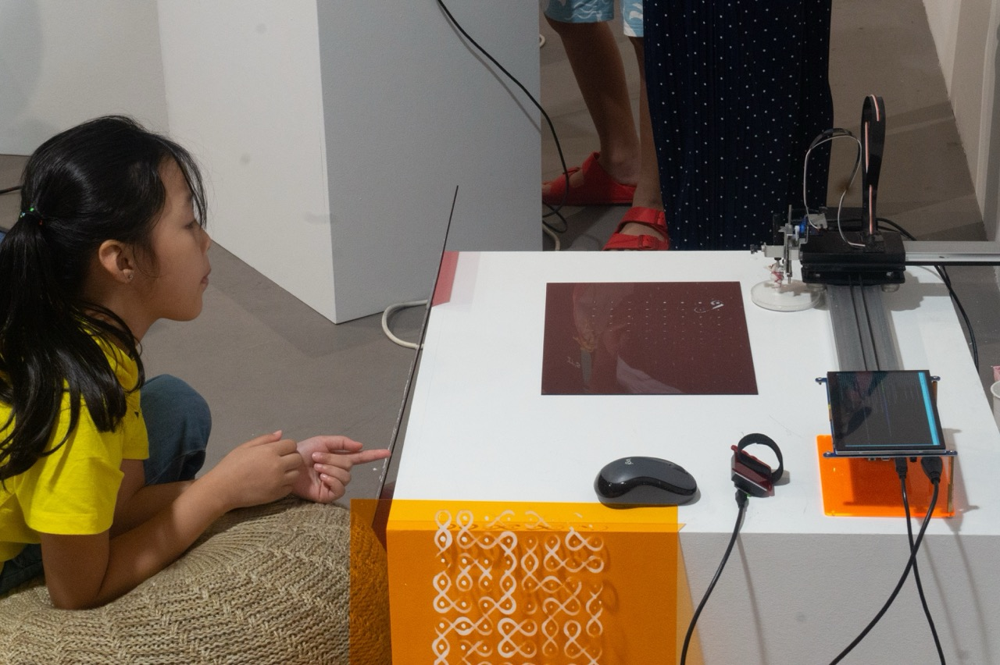
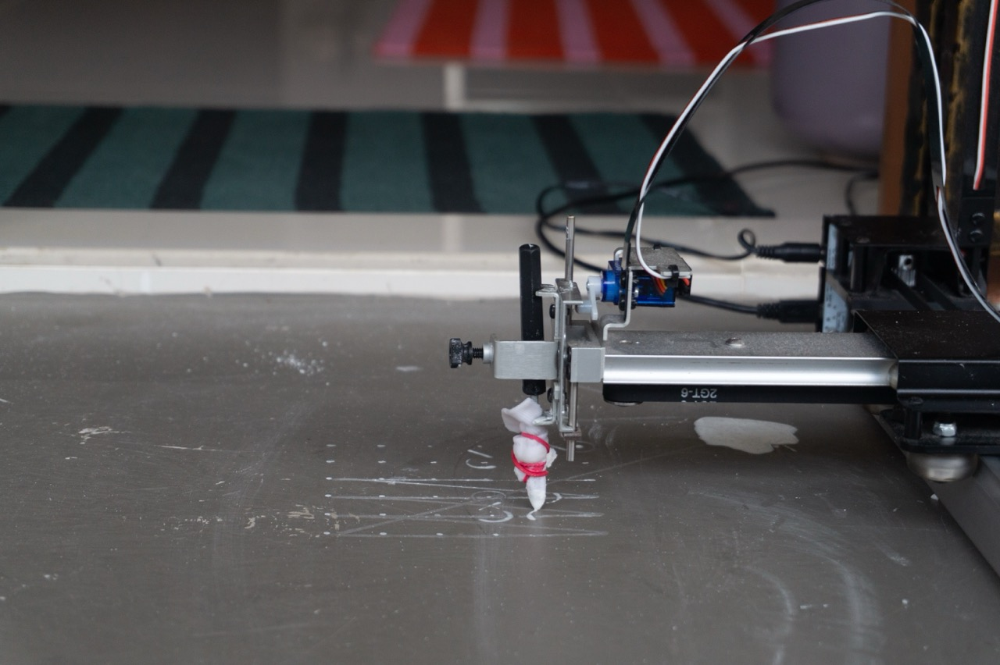
Materiality
I tried by best to stay true to the original materials used for the artform: rice paste. This paste would change
in consistency over hours or even a few minutes, and not even once did I really achieve a smooth consistency
over one kolam batch. These flaws and surprises served as a different way the ‘human touch’ lives on through the
machine.
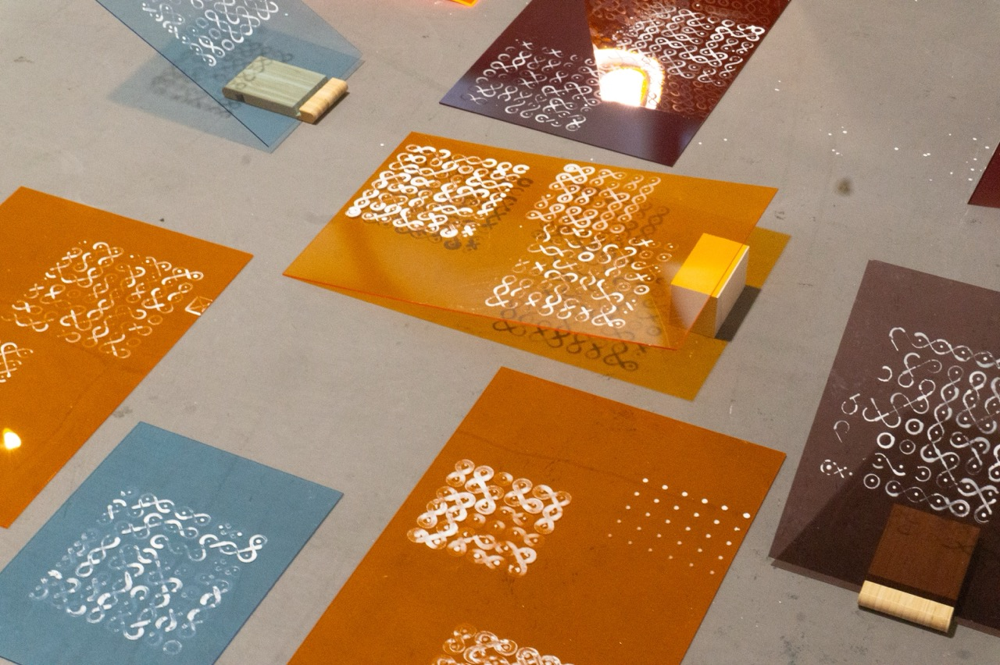
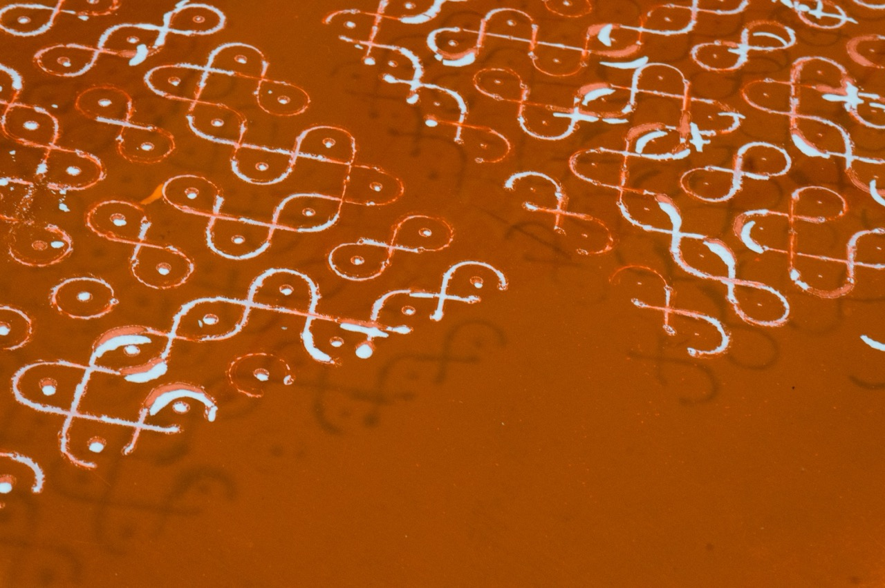
INPUT / SYSTEM
In this interactive form, kolam becomes a collaborative system. The visuals are generated using custom p5.js
scripts, controlled by participants.
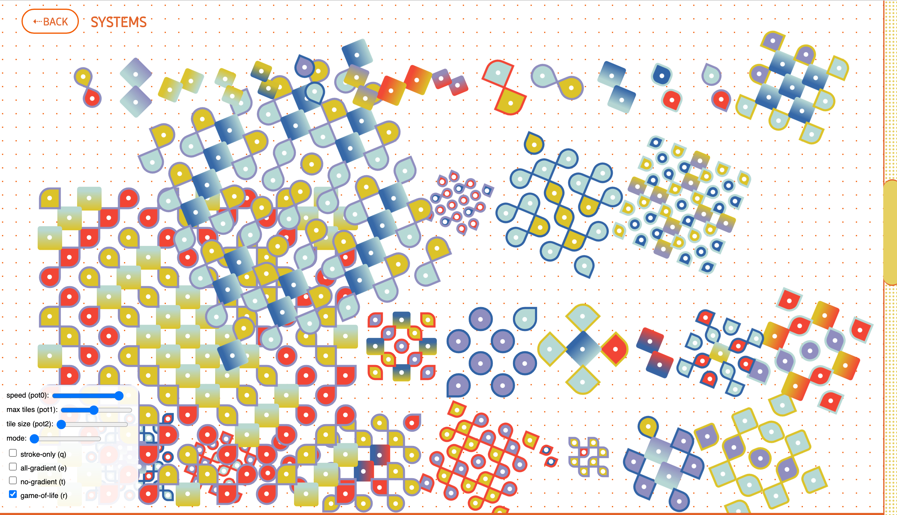

INPUT / SYSTEM
Participants could interact with the system using physical controllers (rotary knobs,
sliders,
toggles) that altered tile sizes, speeds, densities, and modes.
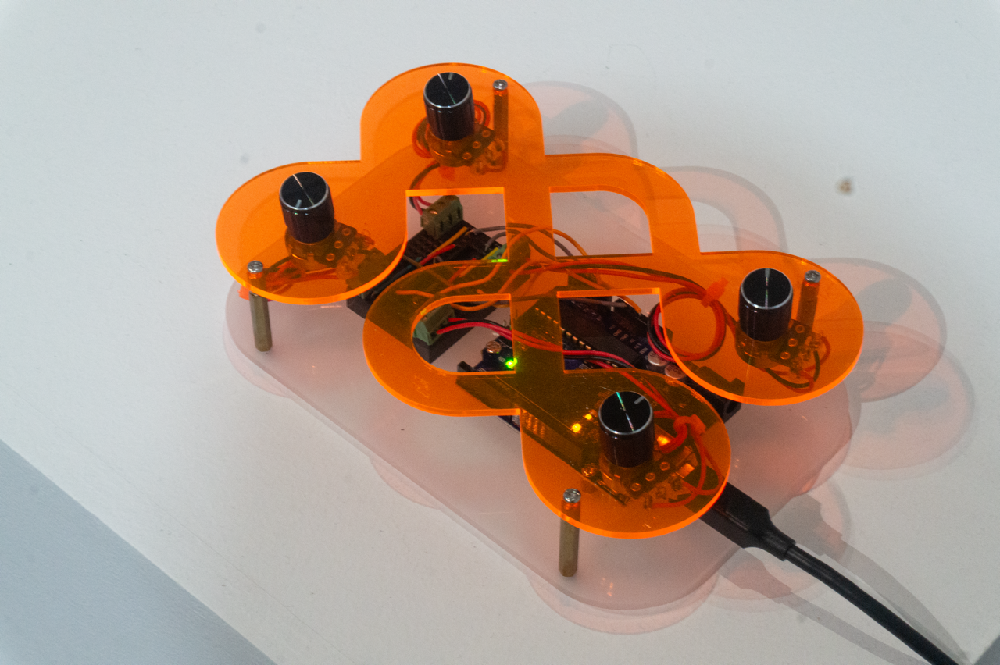
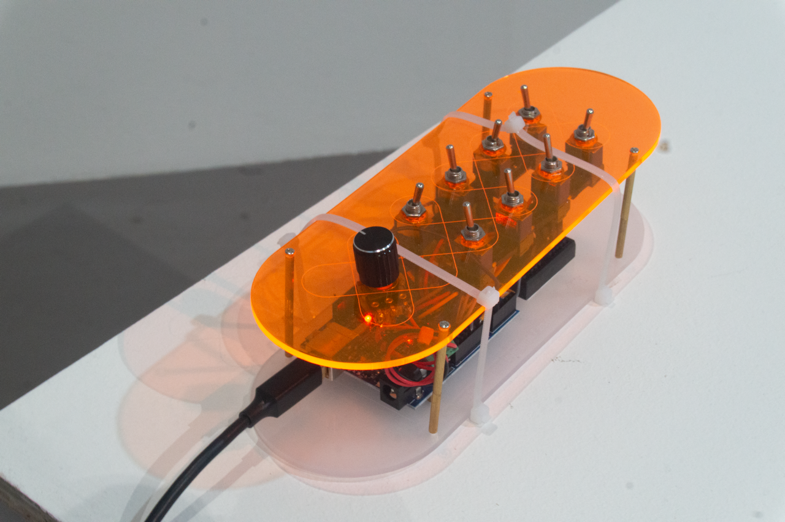
EXHIBITON
Research was presented during Still Rendering, a work-in-progress exhibiton organised by the Singapore Art
Museum.
VISIT MICROSITE→
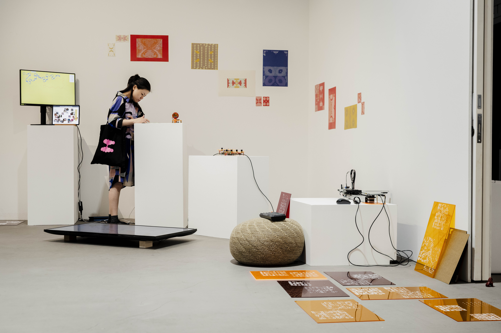
functionditi@gmail.com
+65 96100952
© Aditi Neti 2025